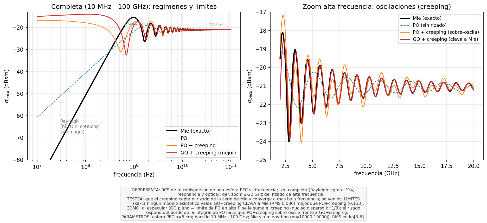
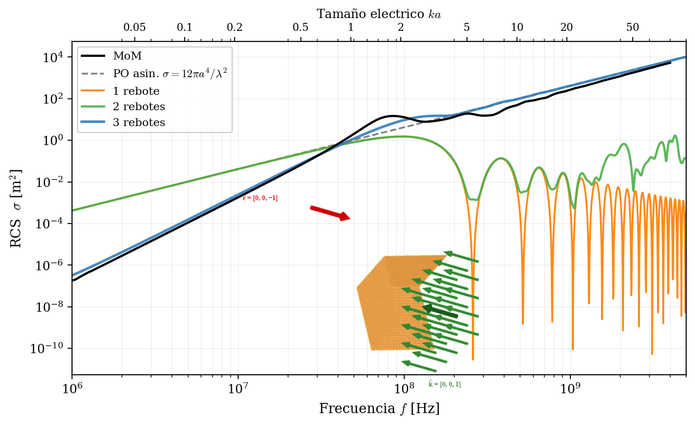
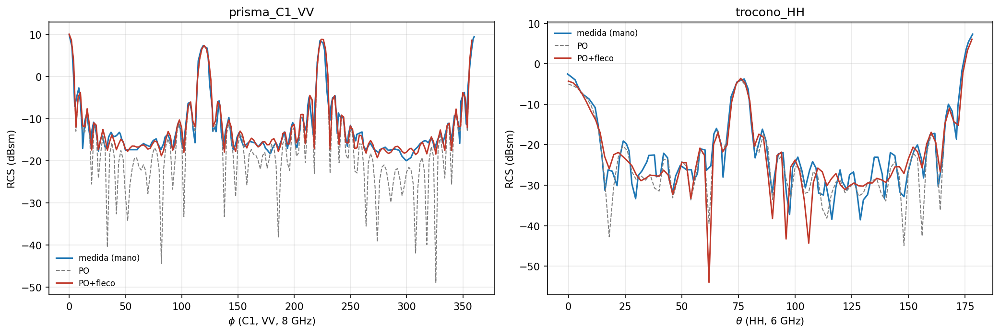
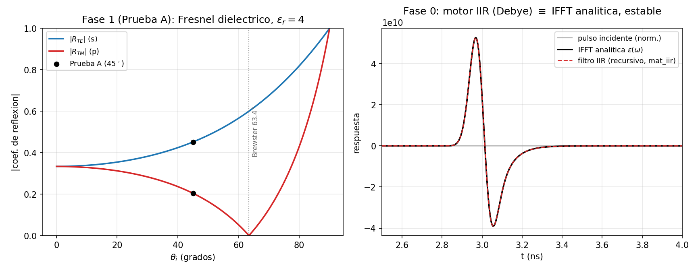
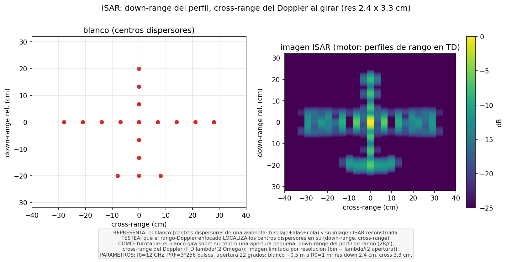

About me
I am a physics and mathematics student with a strong interest in computational methods for physical systems. My main research areas are:
- 🔵Computational Electromagnetics — integral equation methods, scattering, wave propagation
- 🟢Monte Carlo Methods — stochastic simulation, diffusion MC, particle-in-cell
- 🔴Numerical Methods in general — spectral methods, finite differences, integrators, FFT
I enjoy working at the intersection of mathematical rigour and physical intuition, building solvers from scratch and comparing them with theoretical predictions.
🧠 Skills
🛠 Tools
📂 Projects
High-Frequency Computational Electromagnetics in the Time Domain
Given an incident pulse p(t), the solver returns the scattered waveform e(t) directly, via retarded-time integrals — without solving frequency by frequency. The full high-frequency asymptotic chain is recast as closed operations on the pulse: Physical Optics + Shooting-and-Bouncing Rays, edge diffraction (GTD / UTD / PTD / ITD), double- and slope-diffraction, and creeping waves. It is extended to dielectric, lossy and dispersive materials applied as causal IIR filters. Every module is validated against an independent exact reference, and the whole chain against real anechoic-chamber measurements.




mat_iir — a dispersive (Debye) permittivity applied as a recursive real IIR filter reproduces the analytic IFFT of ε(ω) exactly, in the time domain and unconditionally stable.
⚙ HPC. The heavy kernels — ray tracing, PO surface integrals and the diffraction sweeps — are JIT-compiled with Numba and offloaded to the GPU through CUDA. A full angular-and-frequency RCS sweep of an electrically large target therefore runs in seconds on a single workstation rather than hours, which is what makes the experimental validation and the ISAR imaging above tractable.
⚡ Collisionless Plasma · Vlasov–Maxwell
Semi-Lagrangian schemes and Particle-in-Cell (PIC) Monte Carlo for the 1D Vlasov–Maxwell system. Simulates Weibel (electromagnetic) and two-stream (electrostatic) plasma instabilities. Implements Strang splitting with cubic Catmull–Rom interpolation and FFT-based Poisson solver.

🌐 Computational Electromagnetics · Method of Moments
Method of Moments implementation of EFIE and MFIE for electromagnetic scattering by PEC bodies. Solves 2D cylinder (pulse and triangular basis) and 3D sphere (RWG basis functions). Validated against analytical Mie series.

🎲 Quantum Monte Carlo · Harmonic Bosons
Diffusion Monte Carlo (DMC) simulation of N interacting bosons in a 3D harmonic trap. Implements both pure DMC and importance-sampling DMC with a Jastrow trial wave function. Demonstrates 1/N convergence of the ground-state energy. Dimension and potential can be changed.

🌊 Quantum Dynamics · Schrödinger Equation
Cayley (Crank–Nicolson) integrator for the 1D time-dependent Schrödinger equation. Exact norm conservation, transmission coefficient T(λ) vs analytical formula, and Monte Carlo quantum measurement simulation.

📐 Spectral Methods · Helmholtz Equation
Chebyshev spectral–Galerkin discretisation of the 2D Helmholtz equation. Includes full theoretical derivation of the weak formulation, construction of basis functions satisfying Dirichlet BCs, Kronecker-product matrix assembly, and exponential convergence study.

🌌 N-body Dynamics · Molecular & Planetary
Velocity-Verlet N-body integrator (Numba-accelerated) for the Solar System, planet-formation via inelastic collisions, and 2D Lennard-Jones molecular dynamics. Tracks energy conservation, radial distribution function, and temperature equilibration.

🔬 Quantum Transport · Nanoelectronics
Quantum transport simulation in 1D nanostructures: particle-in-a-box, double-well potential, and ballistic MOSFET I–V characteristics. Solves the Schrödinger equation self-consistently with quantum confinement effects and computes conductance vs gate voltage.

🪐 Celestial Mechanics · Three-Body Problem
Numerical integration of the circular restricted three-body problem (CR3BP) in the Earth–Moon system. Explores Lagrange points, Jacobi integral conservation, spacecraft transfer orbits, and chaotic meteorite trajectories.

📈 Critical Phenomena & Cooperative Systems
Monte Carlo simulations of critical phenomena: KPZ universality class, scaling collapse, and wetting dynamics. Extracts critical exponents via finite-size scaling and validates against theoretical predictions of the KPZ universality class.

🔢 FFT & Quantum Physics
Self-contained recursive and iterative FFT implementations validated against analytical DFTs and NumPy. Applied to the quantum harmonic oscillator via FFT-based split-operator imaginary-time propagation. Includes performance benchmarks.

🧬 Stochastic Evolutionary Game Theory
Monte Carlo simulation of evolutionary dynamics in finite populations. Computes fixation probabilities and fixation times for different game-theoretic payoff matrices, comparing stochastic results with analytical predictions from the Moran process.

📡 MOSFET 1/f Noise · McWhorter Model
Experimental characterization of 1/f (flicker) noise in MOSFETs using an HP 35670A FFT spectrum analyzer. Extracts oxide trap density N_T(E_f) from drain current noise spectra via the McWhorter model, both with and without mobility correlation. Includes transfer curve analysis, 1/f spectral fitting across 21 bias points, and comparison of theoretical models against experimental data.

🧲 FRAM Cell · Landau-Khalatnikov Model
Numerical simulation of a ferroelectric RAM (FRAM) cell based on HfO₂ using the Landau-Devonshire free energy and Landau-Khalatnikov polarisation dynamics. Simulates the P-E hysteresis loop, the full Write → Wait → Read operation sequence (including destructive read detection via current pulses), and the ferroelectric phase transition P_r(T) near the Curie temperature.

🔴 Ising Model · Monte Carlo
Monte Carlo simulation of the 2D Ising model with Metropolis and Glauber dynamics. Part 1 validates magnetisation, energy and susceptibility against exact analytical results (J = 0). Part 2 compares with the Onsager exact solution and tracks the ferromagnetic phase transition at Tc ≈ 2.269. Includes spin-configuration visualisations at six temperatures and an evolution animation. Numba JIT-compiled and parallelised.

📡 FDTD · Perfectly Matched Layers
FDTD solvers for the 1D and 2D electromagnetic wave equations with Perfectly Matched Layer (PML) absorbing boundary conditions. Implements the Gedney polynomial conductivity profile with correct staggered-grid evaluation of σE and σH, and full treatment of 2D corner regions (σ = σx + σy). Validates the measured reflection coefficient against the theoretical target R0 as a function of PML width and spatial resolution. Numba-accelerated convergence sweeps.

🧠 Complex Networks · Neural, Social & Ecological
Three themes of dynamics on complex networks. Neural networks: McCulloch–Pitts logic gates, Hodgkin–Huxley conductance-based neuron (full 4D and reduced 2D), FitzHugh–Nagumo excitability, Tsodyks–Markram dynamic synapses (depression/facilitation), and Hopfield attractor memory with finite-temperature phase transition at Tc = 1. Social dynamics: voter model on Watts–Strogatz and Barabási–Albert networks, Abrams–Strogatz language competition. Ecological networks: niche model of food webs, trophic coherence, and May stability criterion. Numba JIT-accelerated.

⚛️ Path Integral Monte Carlo · Quantum Mechanics
Lattice Monte Carlo simulation of quantum mechanics in Euclidean (imaginary) time, following Creutz & Freedman (1981). Implements the Metropolis algorithm on a discrete path-integral lattice to compute ground-state wavefunctions, energy levels, external-source response, renormalised effective potentials, and instanton (kink) configurations in the double-well potential. Numba JIT-compiled; validated against exact analytical results and the Blankenbecler-DeGrand-Sugar benchmark.

🖥️ MOSFET TCAD · 180 nm Drift-Diffusion Simulation
2D TCAD drift-diffusion simulation of a 180 nm n-channel MOSFET on a p-type Si substrate using Synopsys Sentaurus (SDE + SDevice + Inspect). Generates the complete I–V characterisation (ID–VG transfer curves, ID–VD output curves), extracts key figures of merit (VT, SS, gm, ION/IOFF, DIBL), and optimises the gate metal work function across four variants to maximise the ION/IOFF ratio.